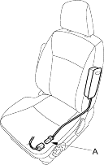
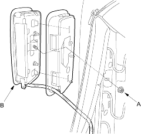
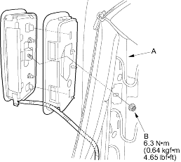

Removal
- Disconnect the battery negative cable and wait at least 3 minutes before beginning work.
- Disconnect the side airbag harness 2P connector (A).

- Remove the seat assembly (see page 20-87) and seat-back cover (see page 20-92).
- Remove the mounting nut (A) and the side airbag (B).

Be sure to install the harness wires so that they are not pinched or interfering with other parts. |
 CAUTION
CAUTION
NOTE:
- If the side airbag lid is fixed by a tape, remove the tape.
- Do not open the lid of the side airbag cover.
- Use new mounting nuts tightened to the specified torque when you replace a side airbag.
- Make sure that the seat-back cover is installed properly. Improper installation may prevent proper deployment.
- Place the new side airbag on the seat back-frame (A). Tighten the side airbag mounting nuts (B).

- Install the seat-back cover (see page 20-92).
- Install the seat assembly (see page 20-87), then connect the side airbag harness 2P connector.
- Move the front seat and the seat-back through their full ranges of movement, making sure the harness wires are not pinched or interfering with other parts.
- Reconnect the battery negative cable.
- After installing the side airbag, confirm proper system operation: Turn the ignition switch ON (II); the SRS indicator light should come on for about 6 seconds and then go off.